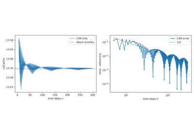
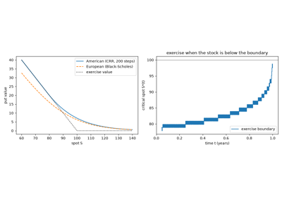

Breakthroughs in Option Pricing#
“The Black-Scholes formula is still around, even though it depends on at least 10 unrealistic assumptions.” – attributed to Fischer Black
An option gives its holder the right, but not the obligation, to buy or
sell at a fixed price. Options traded in Amsterdam in the seventeenth
century and in London and Paris long before anyone could say what one
was worth. The answer came in stages: a model of random prices in 1900,
model-free relations in the late 1960s, the Black-Scholes replication
argument in 1973, then the trees, approximations and inversions that
turned one formula into a trading tool, and finally the smile that
showed where the formula fails. This chronology traces the ideas behind
financialkit.options.
1900 – Bachelier’s Theory of Speculation#
Louis Bachelier’s doctoral thesis, defended at the Sorbonne under Henri Poincaré, modelled the price of French government rentes as a random walk whose continuous limit is what we now call Brownian motion, five years before Einstein’s paper on the subject. He derived the normal distribution of price changes, its spread growing with the square root of time, and priced the options traded on the Paris Bourse. The thesis was largely forgotten until Leonard Savage and Paul Samuelson rediscovered it in the 1950s. Its one flaw for stocks, that prices can go negative, is harmless for rates and spreads, where the normal model is still quoted today.
Implementation: financialkit.options.systems.closed_form.bachelier_price()
prices calls and puts in the normal model, with an absolute volatility.
The example checks it against simulated arithmetic Brownian paths and
shows the square-root-of-time law.
References: L. Bachelier, “Théorie de la spéculation,” Annales scientifiques de l’École Normale Supérieure 17 (1900) 21-86.
1969 – Stoll’s Put-Call Parity#
Hans Stoll observed that a long call and a short put with the same strike and maturity pay \(S_T - K\) in every state, which is a forward contract. Their prices must therefore differ by the value of that forward, whatever model drives the stock. The relation was known to traders, who used conversions and reversals to turn calls into puts, but Stoll’s paper made it the first piece of option theory that needs no assumption about the distribution of prices.
Implementation: financialkit.options.systems.parity.put_call_parity()
gives one leg from the other, and
parity_residual() measures the
arbitrage profit in a mispriced pair. The example shows the residual
vanishing for Black-Scholes prices and the riskless payoff of a reversal.
References: H. R. Stoll, “The Relationship Between Put and Call Option Prices,” Journal of Finance 24 (1969) 801-824.
1973 – The Black-Scholes Formula#
Fischer Black and Myron Scholes assumed that the stock follows geometric Brownian motion and that trading is continuous and frictionless. A portfolio of the option and the right number of shares is then instantaneously riskless, so it must earn the risk-free rate. That yields a partial differential equation whose solution for a European call does not involve the stock’s expected return. The paper was rejected twice before the Journal of Political Economy published it, weeks after the Chicago Board Options Exchange opened. Scholes and Robert Merton received the 1997 Nobel prize in economics; Black had died in 1995.
Implementation: financialkit.options.systems.closed_form.black_scholes_price()
broadcasts over arrays of strikes, maturities and spots. The example
checks it against a risk-neutral Monte Carlo over
financialkit.integrators.gbm_paths().
References: F. Black and M. Scholes, “The Pricing of Options and Corporate Liabilities,” Journal of Political Economy 81 (1973) 637-654.
1973 – Merton: Dividends and No-Arbitrage Bounds#
Robert Merton’s Theory of Rational Option Pricing, published the same year, separated what follows from the absence of arbitrage alone from what needs a model. Among the model-free results are bounds on every European option price, and the fact that an American call on a non-dividend-paying stock should never be exercised early. Merton then rederived the Black-Scholes formula under weaker assumptions and extended it to a continuous dividend yield, stochastic interest rates and barrier options.
Implementation: financialkit.options.systems.parity.no_arbitrage_bounds()
gives the bounds, and the q argument of
black_scholes_price()
is Merton’s dividend yield. The example reproduces Hull’s index option
and shows the prices filling the region between the bounds.
References: R. C. Merton, “Theory of Rational Option Pricing,” Bell Journal of Economics and Management Science 4 (1973) 141-183.
1973 – Delta Hedging and the Greeks#
The heart of the Black-Scholes argument is the hedge: hold \(\Delta = \partial V/\partial S\) shares against each option and the position is riskless over the next instant. Traders soon had Greek letters for the other partial derivatives: gamma for how quickly delta changes, theta for time decay, vega for volatility, rho for rates. The pricing equation ties them together, so time decay pays for gamma. In practice the hedge is rebalanced discretely, and Boyle and Emanuel (1980) showed that the hedging error then has a spread proportional to \(1/\sqrt{n}\) in the number of rebalances.
Implementation: financialkit.options.systems.greeks.black_scholes_greeks()
returns all first-order Greeks plus vanna and volga, tested against
finite_difference_greeks().
financialkit.options.systems.hedging.delta_hedge() simulates a
short option hedged at a chosen frequency. The examples check the
Greeks and the PDE, then measure the hedging error.
References: F. Black and M. Scholes, Journal of Political Economy 81 (1973) 637-654; P. P. Boyle and D. Emanuel, “Discretely Adjusted Option Hedges,” Journal of Financial Economics 8 (1980) 259-282.
1976 – Black’s Model for Futures Options#
Fischer Black adapted the formula to commodity contracts. Entering a futures position costs nothing, so the futures price has zero drift under the risk-neutral measure, and the option formula keeps its shape with the futures price in place of the spot. Because it needs only a forward price and a discount factor, Black-76 became the market’s quoting convention for options on bonds, caps, floors and swaptions as well.
Implementation: financialkit.options.systems.closed_form.black76_price()
is the only Black-76 implementation in financialkit; the
Black-Scholes-Merton and Garman-Kohlhagen pricers call it on the
forward. The example reproduces Hull’s futures put and the equivalence
with Black-Scholes.
References: F. Black, “The Pricing of Commodity Contracts,” Journal of Financial Economics 3 (1976) 167-179.
1976 – Latané and Rendleman’s Implied Volatility#
Every input to the Black-Scholes formula can be observed except the volatility. Henry Latané and Richard Rendleman inverted the formula, solving for the volatility that makes the model price equal the market price, and found that these implied standard deviations predicted future volatility better than historical estimates. Quoting options by implied volatility instead of price soon became standard, because it makes options with different strikes and maturities comparable.
Implementation: financialkit.options.systems.implied_vol.implied_volatility()
checks Merton’s bounds, then brackets the unique root for
scipy.optimize.brentq(). The example shows the monotone price
curve and the error raised for an arbitrageable price.
References: H. A. Latané and R. J. Rendleman, “Standard Deviations of Stock Price Ratios Implied in Option Prices,” Journal of Finance 31 (1976) 369-381.
1978 – Breeden-Litzenberger: State Prices from Options#
Douglas Breeden and Robert Litzenberger noticed that a butterfly spread of calls around a strike pays off only if the stock ends near that strike. In the limit, its price is the Arrow-Debreu price of that state, so the second derivative of the call price in the strike is the discounted risk-neutral density. Option prices thus reveal the market’s entire distribution for the terminal price, not just a volatility.
Implementation: financialkit.options.systems.density.breeden_litzenberger_density()
takes the three-point second difference on any strictly increasing
strike grid. The example recovers the lognormal from Black-Scholes
prices and a bimodal density from a two-regime market.
References: D. T. Breeden and R. H. Litzenberger, “Prices of State-Contingent Claims Implicit in Option Prices,” Journal of Business 51 (1978) 621-651.
1979 – The Cox-Ross-Rubinstein Binomial Tree#
John Cox, Stephen Ross and Mark Rubinstein replaced continuous trading with a stock that moves up or down by a fixed factor in each period. One period at a time, a call is replicated by shares and a bond, which gives risk-neutral pricing with elementary algebra, and the Black-Scholes formula reappears as the number of periods grows. The tree did more than simplify the teaching: backward induction checks for early exercise at every node, so it prices American options, which no closed form did.
Implementation: financialkit.options.systems.trees.CRRTree
values European and American options and records the early-exercise
boundary. The examples show the \(1/n\) convergence to
Black-Scholes, reproduce Hull’s five-step American put, and plot the
put’s exercise boundary.
References: J. C. Cox, S. A. Ross and M. Rubinstein, “Option Pricing: A Simplified Approach,” Journal of Financial Economics 7 (1979) 229-263.

Cox-Ross-Rubinstein: the binomial tree converges to Black-Scholes

Cox-Ross-Rubinstein: the American put and its exercise boundary
1979 – The Rendleman-Bartter Tree#
Richard Rendleman and Brit Bartter published a two-state option model independently, in the same year. They centred each step on the drift of the log price rather than on today’s price, so the up and down moves are nearly equally likely and the lattice drifts with the stock. Both trees match the first two moments of the log return in the limit and converge to Black-Scholes at the same rate; the two parametrizations are the prototypes of the many binomial schemes that followed.
Implementation: financialkit.options.systems.trees.RendlemanBartterTree
shares the backward induction of the other binomial trees. The example
compares its probabilities and node layout with CRR’s and plots both
convergence curves.
References: R. J. Rendleman and B. J. Bartter, “Two-State Option Pricing,” Journal of Finance 34 (1979) 1093-1110.
1983 – Garman-Kohlhagen Currency Options#
Exchange-traded currency options began on the Philadelphia Stock Exchange in December 1982. Mark Garman and Steven Kohlhagen priced them by treating a unit of foreign currency as an asset that pays the foreign interest rate continuously, just as Merton’s stock pays a dividend yield. The formula also makes the symmetry of FX options explicit: a call on one currency is a put on the other.
Implementation: financialkit.options.systems.closed_form.garman_kohlhagen_price()
is Black-Scholes-Merton with q = r_f. The example reproduces Haug’s
currency call and checks the foreign-domestic symmetry.
References: M. B. Garman and S. W. Kohlhagen, “Foreign Currency Option Values,” Journal of International Money and Finance 2 (1983) 231-237.
1986 – Boyle’s Trinomial Tree#
Phelim Boyle, who had introduced Monte Carlo option pricing in 1977, added a third, unchanged branch to each step of the lattice. With three probabilities he could match the mean and variance of the next price exactly at every step, and a stretch parameter \(\lambda\) controlled how far apart the nodes were. The trinomial tree typically reaches a given accuracy with fewer steps, and it is the lattice that explicit finite-difference schemes for the Black-Scholes equation turn out to be.
Implementation: financialkit.options.systems.trees.TrinomialTree
uses Boyle’s moment-matching probabilities. The example verifies the
moments, compares convergence with CRR and varies the stretch.
References: P. P. Boyle, “Option Valuation Using a Three-Jump Process,” International Options Journal 3 (1986) 7-12.
1987 – The Barone-Adesi-Whaley Approximation#
Trees price American options but are slow when a trader needs thousands of prices. Giovanni Barone-Adesi and Robert Whaley, following Lawrence MacMillan (1986), noted that the early-exercise premium itself solves the Black-Scholes equation. Neglecting one small term turns it into an ordinary differential equation with power-law solutions, and smooth pasting at a critical stock price fixes the remaining constant. The result needs a single scalar root search and is accurate to a few cents.
Implementation: financialkit.options.systems.american.barone_adesi_whaley()
finds the critical price with scipy.optimize.brentq() and returns
it with the American and European values. The example compares speed
and accuracy with a 2000-step tree.
References: G. Barone-Adesi and R. E. Whaley, “Efficient Analytic Approximation of American Option Values,” Journal of Finance 42 (1987) 301-320; L. W. MacMillan, “Analytic Approximation for the American Put Option,” Advances in Futures and Options Research 1 (1986) 119-139.
1987 – The Volatility Smile#
Under Black-Scholes every option on the same stock and maturity has the same implied volatility. Before October 1987 index options came close to that. After the crash of 19 October, when the S&P 500 fell by about 20% in a day, out-of-the-money puts became permanently expensive, and implied volatility has fallen steeply with the strike ever since. Mark Rubinstein documented the change and built implied trees to fit it. The smile is the market’s correction to the lognormal assumption: fat tails and a crash premium.
Implementation: financialkit.options.systems.implied_vol.implied_vol_smile()
inverts a strip of prices into a
SmileResult. The example shows
a flat smile from Black-Scholes prices, a symmetric smile from
uncertain volatility, and a skew from a small probability of a crash.
References: M. Rubinstein, “Implied Binomial Trees,” Journal of Finance 49 (1994) 771-818.
1988 – Brenner and Subrahmanyam’s At-the-Money Formula#
Menachem Brenner and Marti Subrahmanyam showed that for an option struck at the forward the Black-Scholes formula is almost linear in volatility. A first-order expansion gives an implied volatility from a single division, close enough for a trader on the floor and a good starting point for an exact solver. The relative error is about \(-\sigma^2 T / 24\), so it is tiny for short, at-the-money options and grows away from the money.
Implementation: financialkit.options.systems.implied_vol.brenner_subrahmanyam_vol()
applies the formula. The example compares it with the exact inversion
across volatilities, maturities and strikes.
References: M. Brenner and M. G. Subrahmanyam, “A Simple Formula to Compute the Implied Standard Deviation,” Financial Analysts Journal 44(5) (1988) 80-83.
1996 – The Leisen-Reimer Tree#
The CRR price zigzags around Black-Scholes as the number of steps grows, because the strike moves between nodes. Dietmar Leisen and Matthias Reimer chose the tree’s probabilities instead of its jumps: they mapped Black-Scholes’s \(d_1\) and \(d_2\) onto the binomial distribution with the Peizer-Pratt normal approximation. The tree is then centred on the strike, the oscillation disappears, and European prices converge at order \(1/n^2\), so a 51-step tree is more accurate than a CRR tree with thousands of steps.
Implementation: financialkit.options.systems.trees.LeisenReimerTree
uses Peizer-Pratt method 2 and rounds the step count up to an odd
number. The example measures its second-order convergence and its
smooth convergence for American puts.
References: D. P. J. Leisen and M. Reimer, “Binomial Models for Option Valuation – Examining and Improving Convergence,” Applied Mathematical Finance 3 (1996) 319-346.